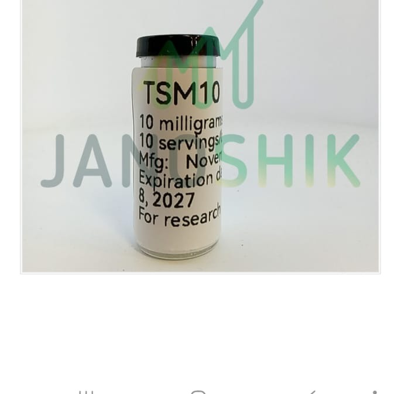

PEPTIQMX
R E S E A R C H · G R A D E
CERTIFICADO DE ANÁLISIS
Certificate of Analysis · COA
DOC ID · PQ-2026-0512-TSM-A
JANOSHIK
Tesamorelin
Polvo liofilizado · Vial estéril · Etiqueta PEPTIQ
Cantidad etiquetada
10mg
Cantidad medida
10.55mg
Lote PEPTIQ
PQ-2026-0512-TSM-A
Fecha de análisis
12 mayo 2026

Muestra enviada a Janoshik Analytical
Fotografía oficial del vial recibido por el laboratorio
Identificación de lote: PQ-2026-0512-TSM-A
Recibido por laboratorio: 17 DIC 2025
Análisis conducido: 18 DIC 2025
Resultados del análisis
| Parámetro | Método | Especificación | Resultado |
|---|---|---|---|
| Identificación | HPLC / MS | Confirmado | Tesamorelin |
| Apariencia | Visual | Polvo blanco a off-white | Conforme |
| Contenido | HPLC | ±5% del etiquetado | 10.55mg |
| Pureza | HPLC (C18, 220nm) | ≥98.0% | 99.062% |
| Endotoxinas | LAL Gel Clot | <5 EU/mg | < 0.25 EU/mg |
| Agua (Karl Fischer) | KF | ≤8.0% | Conforme |
JANOSHIK ANALYTICAL · Tercero independiente acreditado
Brno, República Checa · ISO/IEC 17025 · HPLC-UV-MS · janoshik.com
VERIFICADO
Este certificado confirma que el producto fue analizado por un laboratorio independiente de tercero acreditado. PEPTIQ Research no es un laboratorio de análisis · los resultados reflejan las condiciones de la muestra del lote indicado al momento del análisis. Material exclusivo para investigación científica · NO apto para uso humano ni animal · solo mayores de 18 años · el uso es responsabilidad de quien lo aplique.
★ AVISO · El uso y aplicación es responsabilidad exclusiva de quien lo usa · Material de investigación · solo +18 · no apto consumo humano ni animal